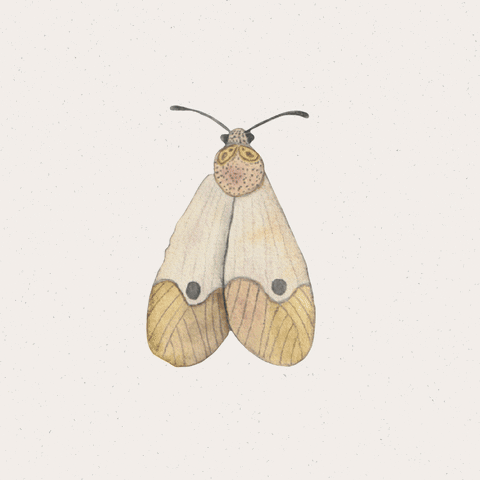

Para Mel
Mi niña


Antes de continuar, podrías presionar nuestra foto para poder amenizar la lectura, por favor

Hola, mi niña.
Decidí hacerte este pequeño detalle, no porque se me hayan acabado las ideas, sino porque sé que es el más adecuado para este tipo de mensaje y sumando que puede ser algo que te guste. Igual te escribo por este silencio que decidiste poner entre los dos. Y no vengo a forzar ningún asunto ni tampoco procuro invadir tu espacio. Sé que estás molesta, sé que estás cansada de mí y entiendo, en verdad, perfectamente por qué pusiste este alto o esta distancia entre nosotros dos. No quería quedarme con todos estos sentimientos atorados mientras esta distancia cada vez se hace más grande. Quiero expresar con palabras lo que en verdad siento cuando mi cabeza no reacciona por impulso.
Vivir en CDMX puede ser un asunto frío y solitario hasta la fecha. Antes de ti, llegar a la ciudad era prácticamente una rutina de escuela y trabajo, pero esto cambió desde que llegaste tú, cuando estudiabas para sobrecargo y tenías que vivir aquí. Todo empezó por una conexión y no por coincidencia, y gracias a eso, la CDMX se volvió una gran marca y un gran patio de actividades entre nosotros dos. Como cuando fuimos al Castillo de Chapultepec, usamos tu camarita y tomamos fotos; cuando fuimos a la expo inmersiva en el Parque Bicentenario; o cuando fuimos a comer al lugar con temática de Studio Ghibli, o nuestra primera cita en la Torre Latino. Y todo esto porque sabía lo mucho que te encantaría.
Me encanta recorrer y andar por la ciudad contigo, subirnos al metro e ir cantando entre la gente sin que nos importara nada más que nosotros, ver cómo te asombra, así sea la cosa más insignificante que tenga vida, tus manualidades hermosas que tanto me encantan, tu ternura de ser tan única. Mi niña hermosa. En cada abrazo y en cómo te preocupabas por mí, en serio encontré un refugio que nunca había tenido.


Por eso mismo, cada detalle que busqué darte lleva un cacho enorme de mi corazón. Desde la travesía que fue conseguir tu camarita vintage para que capturaras el mundo como tú lo ves con esos ojos tan hermosos, hasta cada plan que imaginé para ti. Dejando un poco de lado eso, tú siempre me llamaste y me sigues diciendo tibio, que no doy nada y que no hago nada. Me duele en el alma porque por dentro yo no pensaba ni pienso en otra cosa que en cómo hacerte feliz, y cuando deseaba y llevaba por dentro que fuéramos novios y cómo sería, quería que fuera inolvidable.

Planeando el vuelo en globo, con todo listo, desayuno y actividades, o al preparar un viaje a los campos de cempasúchil y flores para la temporada de Día de Muertos, entre otros planes más. Y algo de lo que no quito el dedo del renglón es de la idea de llevarte al santuario de las luciérnagas porque sé lo mucho que te ilusiona. He querido y siempre quiero que todo fuera perfecto para ti antes de pensar en mí.

Pero la realidad creo que nos fue ganando. Esos planes que, por desgracia, se iban cancelando una y otra vez entre fechas que no nos cuadraban, pero sobre todo por quizá las dudas, las discusiones y la desconfianza que nos empezó a afectar.

Y aquí es donde tengo que asumir mi parte con total honestidad. Te pido una disculpa grande y sincera por la persona en la que me convertía cuando me ganaba el enojo. Me da coraje conmigo mismo y vergüenza recordar cómo reaccioné este fin de semana y en tantas otras ocasiones, cayendo en comentarios malos, comentarios pasivo-agresivos e insinuando cosas horribles, como que siempre tienes a alguien o te refugias en ese alguien. Quizá no lo creas, pero sé lo hiriente que es sentirse juzgado, interrogado o vigilado por una persona. Bien sabes lo mucho que soy celoso, y esos mismos celos y mi impotencia hablaron lo que no debieron. No hay excusa para nada por haberte tratado así.

La verdad más dolorosa es que me sentía atrapado en un laberinto sin salida. Me muero de ganas de dar ese paso definitivo contigo, pero cada vez que sentía secretos, planes que se me ocultaron y que hasta la fecha se siguen ocultando, incluyendo esa falta de límites que en su momento no se pusieron con tu amigo, mientras yo dejaba amistades enteras de lado solo para que tú te sintieras tranquila, sentía que todo se me caía. Me daba pánico lanzarme sin saber que tú estabas lista para poder acceder a eso que quizá en su momento yo pidiera. Entramos en una guerra de desgaste donde tú no ibas a actuar hasta que yo lo hiciera, y yo no me atrevía a actuar porque sentía que no tenía certezas sobre ciertas cosas de tu parte. En este juego nos fuimos rompiendo los dos, más por mi culpa, lo admito.
No te escribo todo esto para pedirte que hagas como si nada hubiera pasado. Tampoco espero que me contestes de inmediato, ni pretendo condicionarte porque aún no soy nada para ti. Solo necesitaba que supieras que reconozco cada uno de mis errores, que sé perfectamente lo que tengo por sanar y cambiar en mí, y que el amor que siento por ti no ha cambiado ni un milímetro.

Te amo de verdad, mi niña pequeña y hermosa. Y precisamente porque te amo, sé que, si esta historia todavía tiene capítulos por escribir, no puede ser para regresar al mismo círculo de reclamos, secretos y desconfianza. Y yo estoy más que puesto, pero si tú decides volver a intentarlo, haremos un trato real y mutuo, donde los acuerdos se cumplan de ambas partes, donde la honestidad no sea negociable y donde la tranquilidad y el respeto para ambos valgan más que cualquier orgullo o miedo.

No quiero hacer este texto más largo, pero solo quiero decirte de nuevo que te amo mucho, que me encanta compartir la vida contigo y ver las cosas brillar a través de tus ojos.
Gracias y sigo apostando toda mi vida por estar contigo. Perdóname por todo el daño causado, espero me des oportunidad para remediarlo.